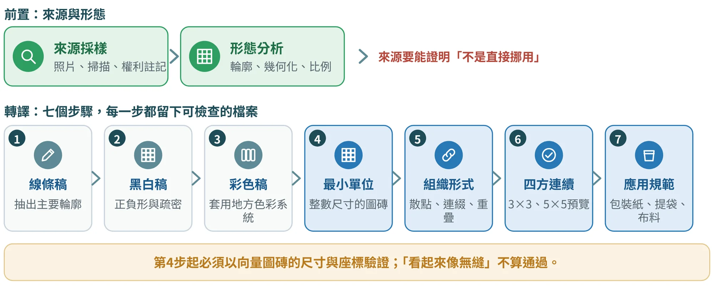
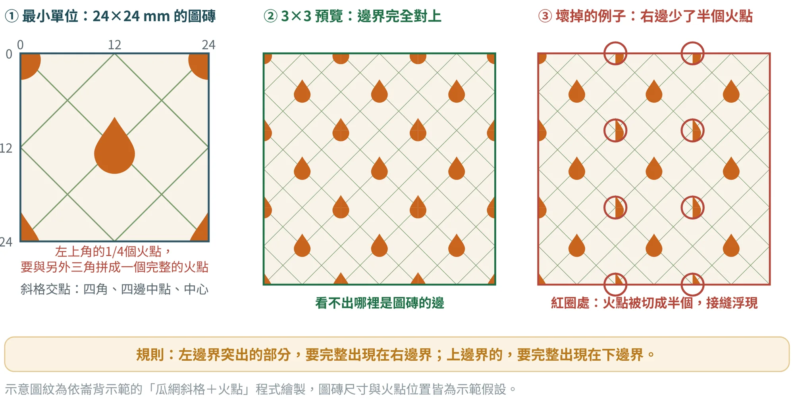
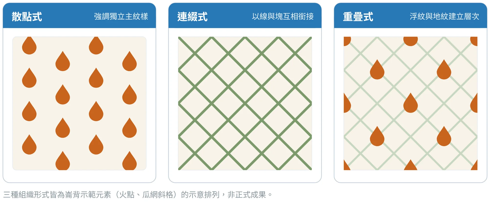
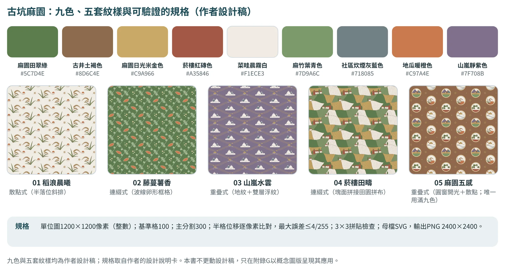
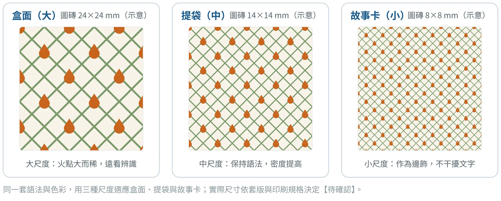

地方圖紋與四方連續樣式圖
從來源物件，到可以無縫延展的圖磚

9.1圖紋不是貼花：為什麼要做成「四方連續」#
很多地方設計，把一個傳統圖案縮小，貼在包裝上，就稱為「地方圖紋」。這種做法有兩個問題：一是看不出圖案的來源與轉譯過程，容易被質疑是直接挪用；二是只能放在固定位置，無法延伸到包裝紙、布料、手提袋、導視與介面。
張文山在2026年10月修訂的課程方法中，把「四方連續樣式圖」正式納入地方圖紋的成果鏈。四方連續樣式圖是指：把一個最小單位的圖磚，向上下左右重複，所形成的圖案沒有接縫、斷裂與突兀的空洞，而且可以向四個方向無限延伸。它的價值有三個：能證明圖紋有系統而非隨手畫；能用同一套語法適應不同尺寸；能用尺寸與座標檢查，而不是憑眼睛判斷。
9.2七步流程：每一步都留下可檢查的檔案#
圖9.1是圖紋的發展流程。前置的兩步（來源採樣、形態分析）建立「這個圖紋從哪裡來」；後面七步把來源一步一步轉成可以重複的圖磚與應用規範。每一步都有檔案：照片與權利註記、線稿、黑白稿、彩色稿、向量圖磚、重複預覽與應用示意。

第1至3步是「畫」，第4步起是「驗」。從最小單位開始，結果必須以向量的尺寸與座標來驗證；「看起來像無縫」不算通過。這個分界很重要：AI可以協助你發散圖紋元素與組織形式，但不能宣稱「已經無縫」。
9.3來源採樣與形態拆解#
圖紋的來源，可以是自然形態、建築、工藝或產業器物。張文山建議的方法有：圖像學與符號分析、自然形態採樣、建築／工藝／產業器物採樣，以及與地方文本交叉驗證；工具是圖紋來源採樣表（範本08）、照片或掃描、來源權利註記與文化意義說明。
採樣之後，進入形態分析：輪廓拆解、幾何化、比例分析、正負形，以及節奏、對稱與方向分析。最重要的是畫出「來源→抽象化階段」，因為這張圖能證明設計不是直接挪用原圖；同時要判斷哪些元素適合作為可重複的主紋樣、輔紋樣與地紋。
表9.1是崙背示範的三條抽象化路徑。每一條都寫出來源、做法與對應的POI，最後說明本示範怎麼用。
| 路徑 | 來源 | 抽象化做法 | 來源POI | 本示範用途 |
|---|---|---|---|---|
| 路徑1 火點 | 澹仔火的火光 | 水滴形火焰、點狀排列 | LB-01、LB-12 | 選用 |
| 路徑2 瓜網 | 洋香瓜的網紋 | 斜向交叉的細網格 | LB-05 | 選用 |
| 路徑3 田格 | 羅厝農地重劃區的方格與細溝 | 方格與細溝的規律 | LB-14 | 留作提袋的變化款 |
選定的組合是「瓜網斜格＋火點」：斜格的交點落在圖磚的四角、四邊中點與中心，邊緣可以對位；火點只放在四角與中心，形成錯位的節奏。這個組合讓包裝一眼看得出「火」，又不必畫出任何宗教圖像。路徑2、3的來源POI是延伸POI，所以示範把「視覺採樣來源」列為待補事項。
9.4最小單位與邊緣對位：用尺寸與座標驗證#
最小單位是整個樣式圖的核心。方法的規則很清楚：以整數尺寸建立正方形或矩形最小單位；以水平與垂直平移為基本規則，必要時使用鏡射、旋轉或半落，但不能破壞上下左右的連續關係。圖9.2用崙背示範的圖磚說明這些規則，圖是依24×24 mm的座標用程式繪製，數學上保證對位。

檢查邊緣對位，不要只用眼睛看。要把圖磚的尺寸（W×H）、跨界元素的座標與線寬寫出來，逐項核對：左側跨界圖形，必須以相同的位移出現在右側；上側跨界圖形，必須以相同的位移出現在下側。形狀、位置、色彩與線寬都必須一致。最後以3×3與5×5預覽檢查，並放大檢視四邊交界。
表9.2是範本13「無縫檢核表」的六個檢核面向，也是成果7驗收的依據。
| 檢核面向 | 設計規範 | 驗收方式 |
|---|---|---|
| 最小單位 | 以整數尺寸建立正方形或矩形圖磚；所有跨界元素都納入同一單位的座標規則 | 保存圖磚尺寸與向量原檔，標示W×H |
| 無縫銜接 | 上下左右重複時，不得出現接縫、斷裂、突兀空洞或重複邊線 | 以3×3與5×5預覽檢查；放大檢視四邊交界 |
| 邊緣對位 | 左側跨界圖形須以相同位移出現在右側；上側出現在下側 | 逐一核對左↔右、上↔下的形狀、位置、色彩與線寬 |
| 組織形式 | 散點式強調獨立主紋樣；連綴式以線與塊互相銜接；重疊式以浮紋與地紋建立層次 | 每案明確標註組織形式，避免無規則堆疊 |
| 尺度與密度 | 至少建立3種密度或尺度，保持相同圖紋語法與地方色彩系統 | 以包裝紙、手提袋、布料至少3種尺寸試套 |
| 文化與權利 | 圖紋來源、抽象化過程、授權與敏感文化內容須可追溯 | 保留來源照片、權利註記、居民或專家檢核與AI修正紀錄 |
9.5三種組織形式：散點、連綴、重疊#
同樣是火點與斜格，排法不同，感覺完全不同（圖9.3）。散點式強調獨立的主紋樣，靠間距與排列產生節奏，適合需要留白、讓品名與標示清楚的版面；連綴式以線或塊互相銜接，整面都是圖，適合作為包裝紙與布料；重疊式以淺色地紋與主色浮紋建立層次，遠看是節奏，近看有細節。選擇時，每一案都要明確標註組織形式，避免無規則堆疊。

古坑麻園：五套紋樣與可驗證的規格
三種組織形式（散點、連綴、重疊）在古坑麻園的設計稿裡有完整的實例（圖9.4）。作者的設計說明卡〔古1〕提供九色、六組母題線稿與五套四方連續紋樣：第一套「稻浪晨曦」是散點式（半落位斜排）；第二套「藤蔓薯香」與第四套「菸樓田疇」是連綴式，前者用波線卵形框格，後者用塊面拼接成田園拼布；第三套「山嵐水雲」與第五套「麻園五感」是重疊式，前者是地紋加雙層浮紋，後者是圓窗開光加散點，也是唯一用滿九色的一套。
更值得學的是規格：單位圖1200×1200像素（整數）、基準格100、主分割300；半格位移逐像素比對，最大誤差不超過4/255；做3×3拼貼檢查；母檔是SVG，輸出PNG 2400×2400。這些都是可以被驗證的數字（9.4節），在九個案例中，古坑是唯一把視覺系統寫到這個程度的。

9.6尺度與應用套版#
圖紋要用在商品上，至少要建立三種尺度或密度（圖9.5）：盒面用大尺度，提袋用中尺度，故事卡用小尺度，保持同一套語法與色彩。再用包裝紙、手提袋與布料至少三種尺寸試套，才算完成。

當圖紋放進包裝展開圖時，還要加上商品套版特有的檢核（表9.3）：裁切、出血與文字區。以下檢核項目與數值，依崙背與竹山兩份示範說明書整理，結果都是示範假設；正式作業須附向量圖磚、3×3與5×5預覽，以及實際套版的輸出稿。
| 檢核項目 | 規範 | 示範做法 | 示範結果 | |
|---|---|---|---|---|
| 最小單位 | 整數尺寸的正方形或矩形圖磚 | 24×24 mm，保存向量原檔 | 通過 | |
| 無縫銜接 | 上下左右重複無接縫、斷裂、空洞 | 3×3與5×5預覽，放大檢查四邊交界 | 通過 | |
| 裁切後連續性 | 跨摺線與裁切後，圖紋不中斷 | 展開圖整張鋪圖後再套刀模 | 通過 | |
| 尺度與密度 | 至少三種尺度，維持同一語法 | 盒面大、提袋中、故事卡小 | 通過 | |
| 留白與文字區 | 品名、標示與QR不被圖紋干擾 | 白底區塊；文字距裁切線至少3 mm | 通過 | |
| 出血 | 印刷出血 | 四邊外擴3 mm | 通過 | |
| 文化與權利 | 來源、抽象化過程與授權可追溯 | 火點只取抽象水滴形；名稱與意象使用須崇賢寺同意 | 待確認 | |
實踐案例 竹山：5×5連續的竹編圖紋，與來發的標誌 張文山的竹山完整管線，把「竹節、編織」轉成「節點化線條」與「編織模組」，再發展5×5連續式的「竹編連續圖紋」，並通過精準座標檢核。教學提示詞特別要求「不要直接複製竹編圖樣」，而以「節點、交織、節奏、留白」為形式特徵，依「線稿→黑白→彩色→最小單位紋樣→四邊對位→5×5無縫預覽」的步驟轉譯。 來發打鐵的標誌，則完整示範了圖形如何一步一步被修正：初稿、線條修正、網格修正，最後完成商標設定。重點不是最後的形狀，而是每一個階段都有紀錄，能說明它如何從來源變成標誌。 資料依張文山教學簡報與教學提示詞整理；竹山圖紋的詳細成果與座標檢核紀錄，以張文山的教學資料為準待確認。 | ||||
9.7識別治理：誰可以使用地方的視覺資產？#
當地方色彩與圖紋成為公共資產，問題就不只是「如何設計」，而是「如何使用」：誰可以使用這套圖紋？商家能不能自行套用？活動單位要不要申請？哪些使用方式會造成誤解？如何避免低品質的複製，或過度商業化？
因此，地方視覺系統要搭配簡明的使用規範或授權機制。視覺手冊不只是設計附件，而是地方治理的工具：它協助地方政府、社區組織、商家、設計者與文化團隊，在共同的語言下合作，使地方識別不因多方使用而失去一致性。9.6節的東港案例與15.5節的兩級使用制度，就是一個例子：公共層讓一致性成為可能，專屬層建立差異與誘因。表9.4是一本視覺手冊的最小內容。
| 手冊項目 | 要寫什麼 | 對應的成果與紀錄 |
|---|---|---|
| 識別來源與語意 | 色彩與圖紋各自的來源物件、取色或抽象化步驟與語意；來源的權利與授權狀態 | 採樣紀錄（範本07）、來源→線稿→彩稿 |
| 色彩系統 | 主色、輔色與情境色的色碼、比例與使用建議；文字與背景的對比檢查 | 地方色彩（第8章） |
| 圖紋與圖磚 | 最小單位、向量原檔、尺度規則，以及不可變形、不可拆解的規定 | 四方連續樣式圖（範本08、13） |
| 應用範例 | 包裝、導視、網站、地圖、公共家具的正確示範與錯誤示範 | 商品與遊程成果（第10、11章） |
| 使用分級 | 誰可以直接使用、誰須申請、誰不得使用；涉及宗教、族群與私人記憶的素材，要先走文化倫理決策樹 | 15.3、15.5節 |
| 授權與維護 | 申請流程、使用期限與範圍、品質檢查、違規處理、修訂與版本管理、聯絡窗口 | 15.4、15.6節；表C.12 |
手冊用於治理的觀點依張文山〈地方DNA設計轉譯：從地方知識萃取到永續設計實踐的方法論〉（易讀版，2026年7月）；六個項目為本書建議編排，授權細節與法律效力請依學校規定與法律專業意見處理。
視覺治理的目的，是讓地方識別從一次性的設計，變成長期的公共資產。它也回應了LGSD的第四個精神：沒有治理的設計，往往只停留在一次性提案（3.8節）。能被治理的視覺設計，才可能成為長期的地方公共資產。
識別治理的案例：誰在管，怎麼管？
視覺資產成為公共資產之後，問題從「如何設計」變成「如何使用」。九個案例裡，有六個正好碰到這個問題（表9.5）。共同的觀察是：多數案例有設計，少數有規範；而且最需要規範的，常常是涉及宗教、作品權利與多方共用的資產。
| 案例 | 要治理的視覺資產 | 文件裡看得到的機制 | 缺口 |
|---|---|---|---|
| 北港 | 朝天宮建築與繞境的影像；光影節的光影設計 | 朝天宮為宗教管理主體，光影節以合作方式舉辦〔北1〕 | 宗教影像授權、旅人市集的場地使用與分潤，文件未見 |
| 鳥取 | 水木茂的妖怪作品與「妖怪」IP | 簡報提出以妖怪插畫形成識別系統；縣政府以「漫畫王國」等頁面推廣〔鳥3〕 | 簡報未寫妖怪IP的授權架構；作品權利在創作者與出版方，建議用原創造形，或取得授權 |
| 古坑 | 九色與五套紋樣 | 規格完整（9.5節），歸屬於作者的設計作品 | 文件未見使用範圍、授權與署名；「九色只有第五套用滿」這類規則要寫成條文 |
| 怡保 | 「錫礦×白咖啡×岩洞」圖騰系統與城市色彩 | 簡報有概念與三個色名〔怡1〕 | 圖騰使用授權、遺產站房管理權責與色彩使用規範，文件未見 |
| 埔里 | 水色、紙白、酒琥珀、蛙綠的共同色票（本書示範） | 三處各有識別；共同色票未經檢核 | 要先取得酒廠、紙寮與桃米的同意，並決定誰負責維護示範假設 |
| 鹿谷 | 凍頂茶LOGO（以比賽徵集） | LOGO徵集與品牌創新工作坊〔鹿2〕 | 徵集不等於視覺系統；茶具、LOGO與配方資料的授權與公開程度未見 |
依各案例驗證卡的V4、V6整理（17.6節）；來源編號見附錄F.6。
9.8AI協作：發散規則，不判定「已無縫」#
圖紋是AI最容易「做過頭」的一個階段：它可以產生好看的連續圖，但那多半只是圖片，不是你可以檢驗的向量圖磚。因此本書把AI的分工定得很清楚：AI負責規則與變體發散，不負責判定「已無縫」；最終的單位尺寸、邊界座標、重複結果、文化使用倫理與著作與傳統知識權利，一律由設計者人工驗證。
根據我提供的文化原型照片、來源說明與已驗證設計語彙，提出「來源→抽象化→線稿→黑白→彩色→最小單位→散點／連綴／重疊→四邊對位→3×3／5×5」的圖紋發展方案。AI只提供規則與變體，最終無縫性須以向量尺寸與座標人工驗證。
提示詞出自張文山〈AI協作Prompt增補版〉（2026-10-06修訂，第三版-2）「地方圖紋／四方連續樣式圖設計」。
請根據我提供的最小單位圖磚、向量規格、座標或預覽影像，檢核「無縫銜接」。判準：上下左右重複時不得出現接縫、斷裂、突兀空洞或重複邊線。驗收依據：以3×3與5×5預覽檢查；放大檢視四邊交界。請輸出「通過／需修正／無法判定、問題位置、證據、修正建議、需人工驗證項目」。缺少必要資料時不得猜測或宣稱通過。
檢核提示詞出自同一份文件的「四方連續樣式圖建構與檢核」。AI的檢核只是輔助：最後通過與否，要以向量圖磚的尺寸與座標，以及人工放大檢視為準。